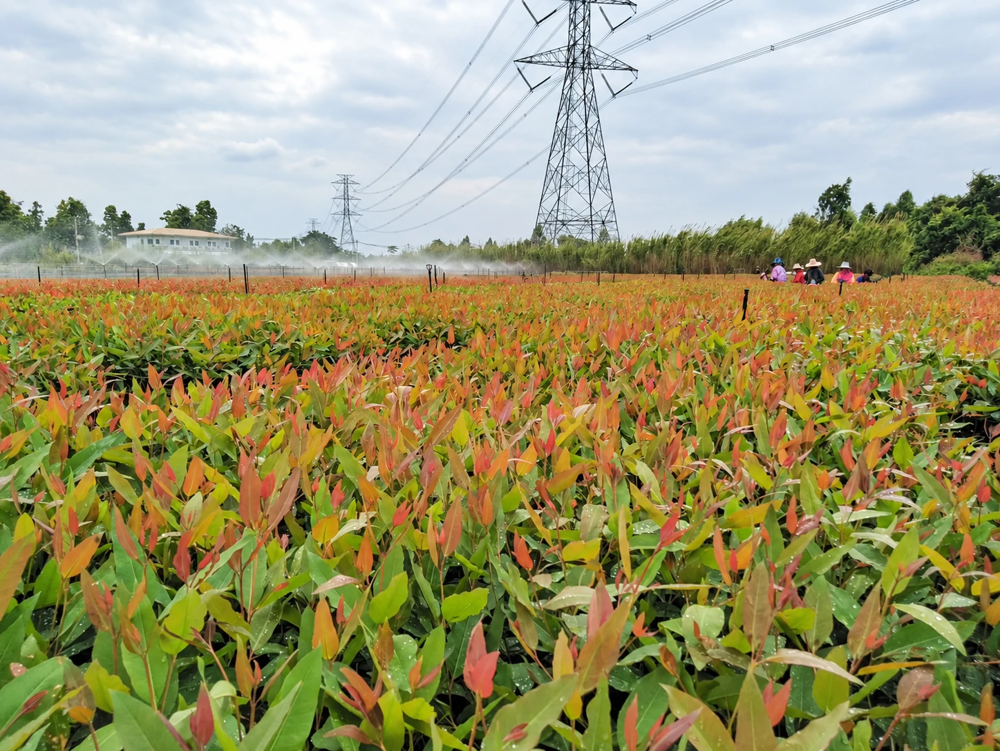
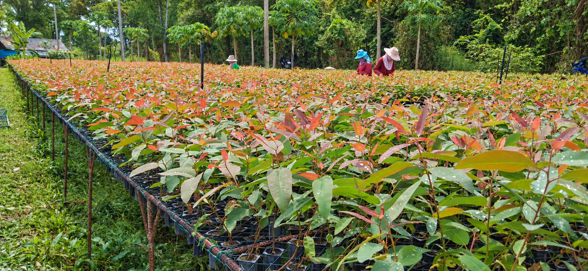
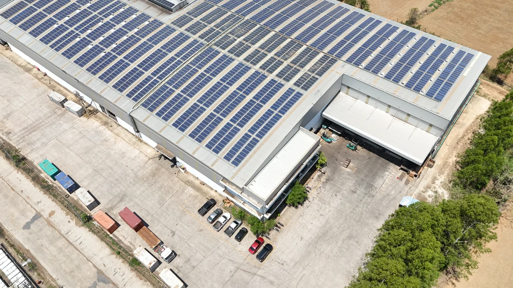
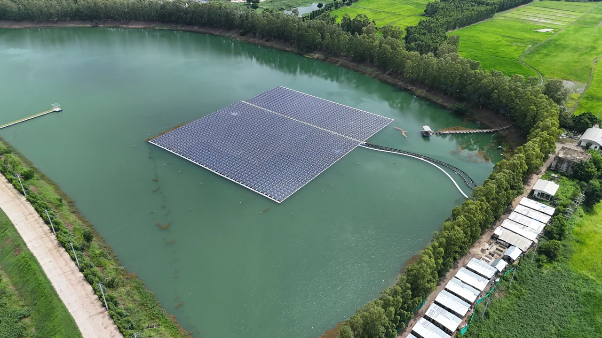
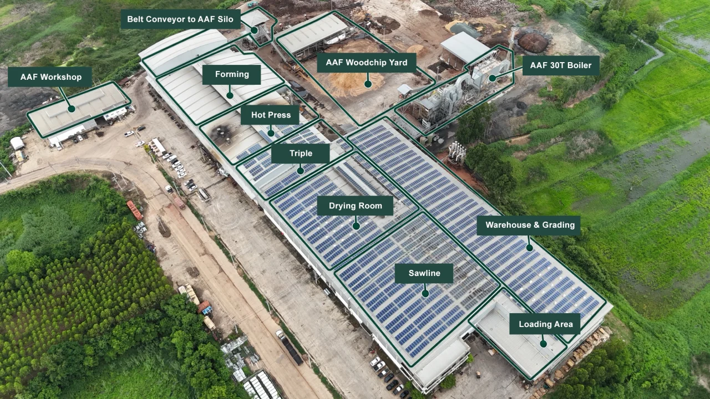
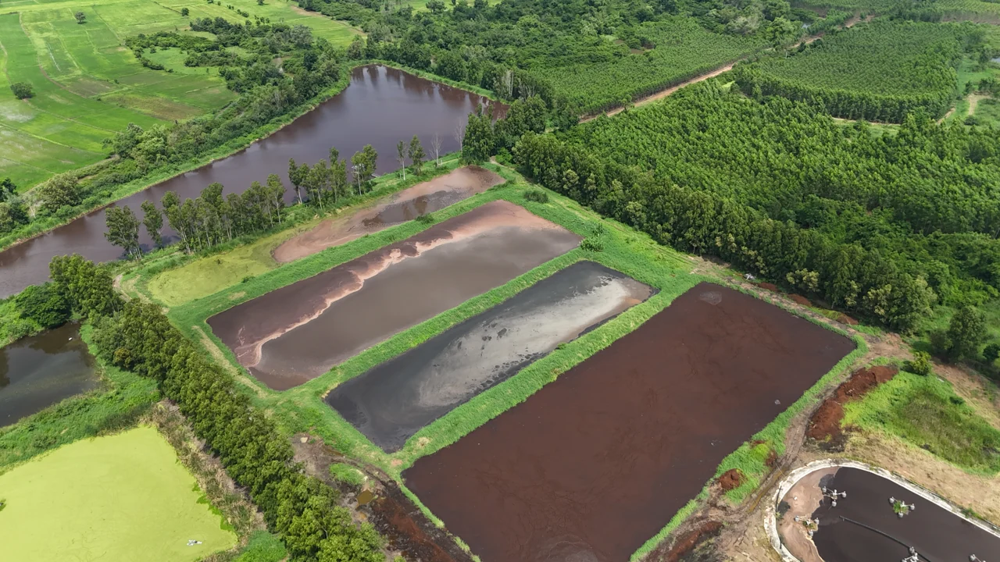
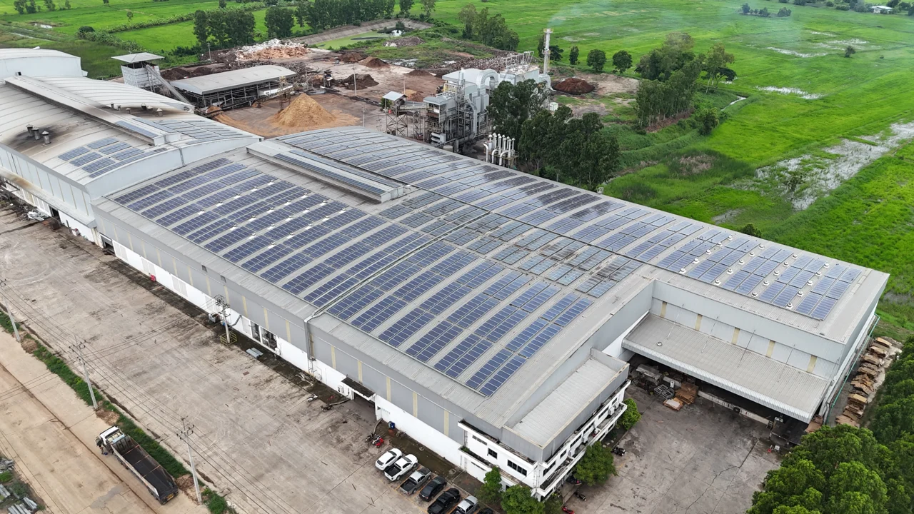
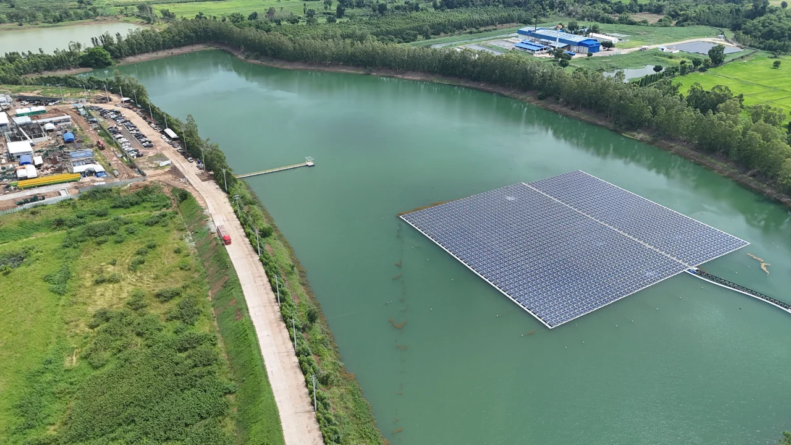
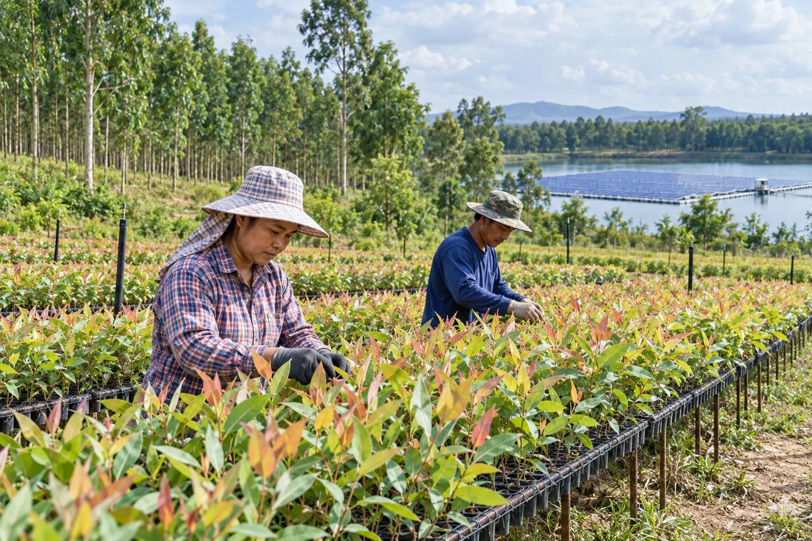

For Nature
Responsible use and development of renewable natural resources.
 TRIPLE AHARDBOARD
TRIPLE AHARDBOARD
SUSTAINABILITY
Growing the Future from the Ground UpFrom every tree we nurture to every life our products touch.

FROM TREE TO BETTER LIVING
At AAF, we believe that responsible manufacturing starts long before a product enters the factory. It begins with how natural resources are grown, managed and transformed into value.
Through our connection with plantation and local communities, we seek to support responsible cultivation, encourage the development of seedlings and contribute to better livelihoods for people connected to the forest and agricultural ecosystem.
From plantation-grown trees to fibre and finished products that support better living, every step is an opportunity to create value responsibly.

Responsible use and development of renewable natural resources.
Supporting communities and livelihoods connected to plantation activities.
A material story they can connect to - from responsible resources to responsible products.
“A better product begins with a better relationship with nature.”
Powering Progress with Renewable Energy
Sustainability must be built into the way we operate.
AAF is investing in renewable energy as part of our commitment to reduce the environmental impact of our operations and move toward a more responsible manufacturing future.
Our renewable energy initiatives include Rooftop Solar and Floating Solar, implemented across our business operations where appropriate. By turning available spaces into sources of clean energy, we are taking practical steps toward a more energy-efficient and lower-impact manufacturing environment.

Our rooftop solar installations transform unused rooftop space into a source of renewable electricity for our operations.
This helps us:

Floating Solar provides another opportunity to expand renewable energy generation by utilizing suitable water surfaces.
Together, Rooftop Solar and Floating Solar demonstrate our approach:
Use what we have. Generate cleaner energy. Build for the future.




“Sustainability is not only what we believe. It is what we invest in and operate every day.”
Turning Sustainability into Impact
One Journey. One Responsibility.
At AAF, sustainability is not defined by a single project or initiative. It is the connection between everything we do.
From the trees and natural resources that begin our journey, to the people and communities connected to our business, to the renewable energy that powers our operations - every action contributes to a larger purpose.
Creating positive impact across three connected dimensions:

We depend on nature.
Therefore, responsible business begins with respecting
the resources that make our business possible.
Our focus includes:
Protect what we depend on.
Sustainability is ultimately about people.
Our employees, communities, partners and customers are all part of the ecosystem in which AAF operates.
Our focus includes:
When people thrive, communities become stronger.
Every business has an environmental footprint.
Our responsibility is to continuously identify opportunities to reduce that impact and move toward more sustainable operations.
Our focus includes:
Every improvement today shapes the planet of tomorrow.
Creating Value Responsibly